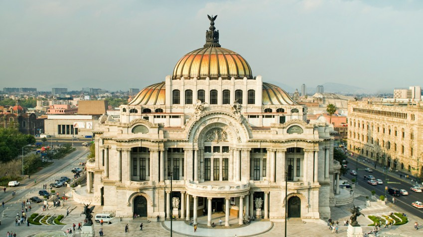

Ciudad de México
Es una de las 32 entidades federativas de México, así como la capital de los Estados Unidos Mexicanos.23 Se localiza en el Valle de México, a una altitud media de 2240 m s. n. m.

Algunos monumentos importantes del estado de Ciudad de México son:
Museo Nacional de Antropologia
Palacio de Bellas Artes
Museo de la Ciudad de México
Museo Soumaya
Castillo de Chapultepec
Pero especificamente les hablaremos de uno en especial:
PALACIO DE BELLAS ARTES
Es un recinto cultural ubicado en el Centro Histórico de la Ciudad de México, considerado el más importante en la manifestación de las artes en México y una de las casas de ópera más renombradas del mundo.
